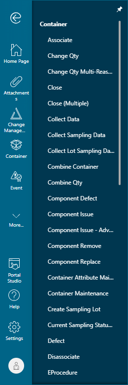

Sie können über das Portal auf Portal Studio zugreifen.
Wenn Sie das Portal verwenden, unterscheidet sich der Zugriff auf Studio abhängig vom Thema, das Sie für den Zugriff auf das Portal verwendet haben. "Horizon" ist das Standardthema, wenn Sie sich beim Portal mithilfe des Standardmodus anmelden.
Siemens stellt das Thema "Horizon" zur Verfügung, das das Standardthema für die Anzeige der Anwendung darstellt. Themen sind eine Möglichkeit, den Stil oder die CSS der Anwendung zu aktualisieren. Sie können Ihr eigenes benutzerdefiniertes Thema erstellen oder das bereitgestellte Standardthema "Horizon" verwenden.
Portal Studio 2.0 ist, unabhängig vom Einstiegsmodus, die Standardversion von Portal Studio für Opcenter Execution Core Version 8 und höher. Weitere Informationen zu den Einstiegsmodi finden Sie im Opcenter Execution Medical Device and Diagnostics-Benutzerhandbuch – Erste Schritte oder im Opcenter Execution Core-Benutzerhandbuch – Erste Schritte.
| Wichtig: | Für den Zugriff auf Portal Studio müssen Cookies aktiviert sein. |
Sie können über das Portal auf Portal Studio zugreifen, indem Sie auf das Portal Studio-Symbol in der primären Navigationsleiste im Portal klicken, wenn Sie das Thema "Horizon" verwenden.
Diese Abbildung enthält ein Beispiel für die primäre Navigationsleiste, wenn Sie das Portal im Standardthema "Horizon" anzeigen.

Wenn CSI der höchste aktive Arbeitsbereich ist, wird eine Fehlermeldung angezeigt und Sie können nicht auf Portal Studio zugreifen. Sie müssen erst einen anderen Arbeitsbereich in Management Studio aktivieren. Danach können Sie auf Portal Studio zugreifen. Weitere Informationen zum Aktivieren von Arbeitsbereichen finden Sie in der Opcenter Execution Medical Device and Diagnostics-Anleitung zur Systemadministration und in der Opcenter Execution Core-Anleitung zur Systemadministration.
| Hinweis: | Das Portal zeigt keine Fehlermeldung an, wenn Sie zu dem Zeitpunkt, zu dem CSI zum höchsten aktiven Arbeitsbereich gemacht wird, bereits am Portal angemeldet sind. Eine Fehlermeldung wird angezeigt und Sie können nicht auf Portal Studio zugreifen, wenn Sie sich abmelden und sich dann erneut am Portal anmelden. |
Startseiten-Dashboard
Wenn Sie auf Portal Studio zugreifen, wird im Arbeitsbereich das Startseiten-Dashboard (Start Page) angezeigt. Das Startseiten-Dashboard enthält Links zu häufig verwendeten Komponenten und Informationen zur Verwendung von Portal Studio.
Das Startseiten-Dashboard enthält die folgenden Abschnitte:
| • | "Neu erstellen" – enthält Links zum Erstellen neuer Komponenten, z. B. Seiten, Webparts und Seitenfolgen. |
| • | "Erste Schritte" (Getting Started) – enthält einen Link zu Informationen zur Verwendung von Portal Studio. |
| • | "Aktuell" (Recent) – enthält Links zum Öffnen der fünf zuletzt geöffneten Komponenten. |
Im Startseiten-Dashboard werden die fünf zuletzt geöffneten Komponenten gespeichert. Die Liste wird aktualisiert, wenn Sie Komponenten öffnen. Wenn Sie auf den Link zu einer Komponente in der Liste "Zuletzt verwendet" (Recent) klicken, die seit dem Zugriff auf Portal Studio gelöscht wurde, wird eine Fehlermeldung angezeigt. Wenn Sie die Fehlermeldung schließen, wird die Komponente aus der Liste entfernt und durch eine andere der zuletzt geöffneten Komponenten ersetzt. In der Liste "Aktuell" (Recent) werden beim nächsten Zugriff auf Portal Studio keine Komponenten angezeigt, wenn alle zehn vor Kurzem geöffneten Komponenten gelöscht werden.
Sie können zum Portal zurückkehren, indem Sie auf die Schaltfläche "Zurück zum Portal" (Back to Portal) klicken. Bevor Sie zum Portal zurückkehren, werden Sie von Portal Studio aufgefordert, Ihre Änderungen zu speichern.
Portal Studio erzwingt kein Ablaufen der Sitzung bei Zeitüberschreitung. Portal Studio-Sitzungen sind an das Portal gebunden und laufen nur ab, wenn eine Instanz des Portals abläuft. Portalsitzungen laufen standardmäßig nach 20-minütiger Inaktivität ab.
| Hinweis: | Den Standard-Zeitüberschreitungswert für das Portal können Sie in der web.config-Datei ändern, die sich standardmäßig im Pfad C:\Programme (x86)\Camstar\Camstar Portal befindet. |
Portal Studio zeigt keine Sitzungsablaufwarnung an, wenn die Sitzung abläuft. Wenn Ihre Sitzung abläuft, gehen nicht gespeicherte Änderungen verloren. Sie müssen sich erneut beim Portal anmelden und auf Portal Studio zugreifen.
Vorgehensweise zum Zugreifen auf Portal Studio über das Portal
Gehen Sie wie folgt vor, um auf Portal Studio zuzugreifen:
| 1. | Melden Sie sich beim Portal an. |
| 2. | Klicken Sie in der primären Navigationsleiste des Portals auf das Symbol Portal Studio.Portal Studio und das Dashboard "Startseite" werden angezeigt. |
Vorgehensweise zum Zurückkehren zum Portal
Gehen Sie folgendermaßen vor, um zum Portal zurückzukehren:
| 1. | Greifen Sie auf Portal Studio zu. |
| 2. | Führen Sie die erforderlichen Arbeitsschritte aus. |
| 3. | Klicken Sie auf die Schaltfläche Zurück zum Portal (Back to Portal). Portal Studio wird geschlossen und Sie kehren zum Portal zurück. |